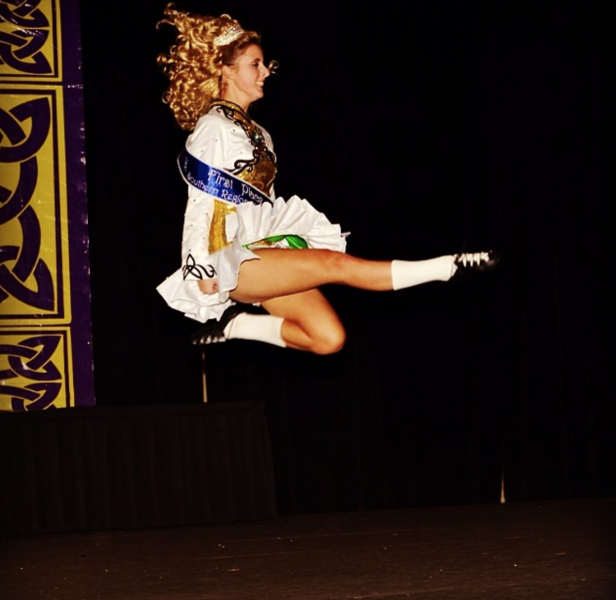

Irish Dance gained a lot of popularity from Michael Flatley's shows Riverdance, Lord of the Dance, Feet of Flames, and Celtic Tiger, and it is unlike any other type of dance, and competition only adds to its intensity. I started Irish dance at age three, and I quickly found myself motivated to be better. I was six when I competed in my regional competition and was ranked 25th in the Southern region out of 100 dancers in my age group. By ten years old, I was ranked in the top 5 and started to compete in the national and world championships. The competitive world of Irish dance is unlike anything else. It is an entirely different world. The link below is to my dance school's website.

In a typical competition for the highest level of dancers, there are two main catagories of dances based on the type of shoe worn: hard shoe and soft shoe. Hard shoes resemble tap shoes in a lot of ways. The tip and heel of the shoe are made of fiberglass to make the sound and rythem as loud as possible. The hard shoe round is the first round of all major competitions, so dancers want to be as looud as possible in order to stand out to the judges. The second round, the soft shoe round, is light and graceful, resembling ballet. Only the top half of the first two rounds are given a recall and allowed to dance in the third round, the set dance. This round is in hard shoes, and it is the dancer's show piece. Since each dancer is alone on stage for this round, the rythem is extremely important.
| Hard Shoe | Soft Shoe |
|---|---|
| Treble Jig | Slip Jig |
| Hornpipe | Reel |
| Set Dance | Ceili Dance |
Competitive Irish dance is extremely expensive. The dress alone is $2,500-$4,000 before shipping costs. This seems like a lot of money for one dress that a dancer might wear for a year or until she grows out of it, but these dresses are hand-made in Irealand. They are specifically designed and tailored to the dancer. Since multiple girls dance on the stage at a time, dancers want to instantly grab the judges attention as soon as they walk on stage. My dancer teacher always said, "you have to look like you are the best." Apart from the dress, these are necessities in order to look the best: